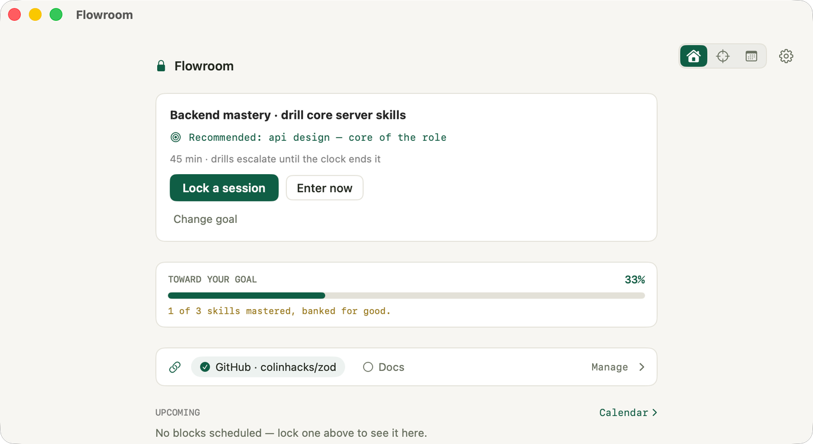
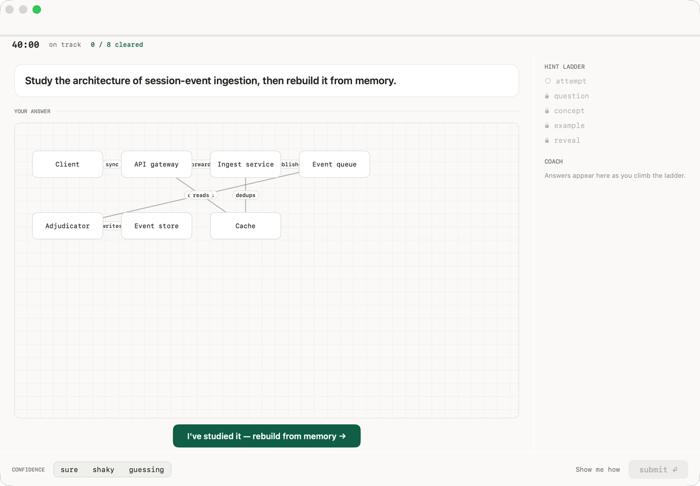
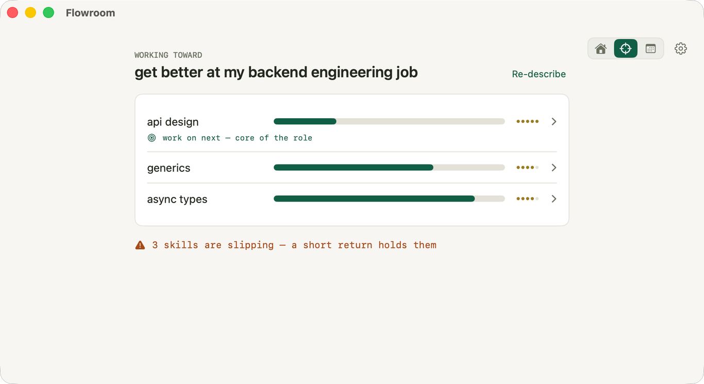

How it works
Commit. Focus. Grow.
01 · Commit
Name a goal. Get a plan.
Tell Flowroom what you're working toward. It builds a prioritized plan of skills and recommends what to practice next, so you never face a blank "what now."

02 · Focus

A room built for deep work.
Commit to a block with a stake that keeps you present. A clean, distraction free session with no notifications and no rabbit holes.
03 · Practice
Learn by doing, not watching.
Problems at the edge of your ability. Stuck? See the approach, then rebuild it yourself. You only really know it once you can do it unaided.

04 · Grow
Progress you can feel.
Every session updates an honest map of what you know. Mastered skills are banked for good, and your goal fills in as you go, so you always see the finish line.
